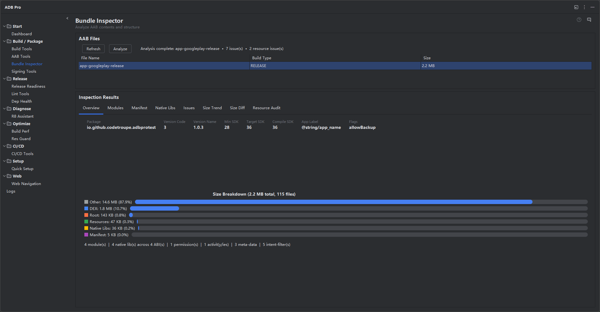

Deep analysis of your Android App Bundles. Track size across versions, audit resources for redundancy, and understand exactly what ships to your users.

Bundle Inspector provides deep analysis of your Android App Bundle (.aab) files, giving you a complete view of their internal structure, resource composition, and size distribution across modules. It opens any AAB and breaks it down into modules, resource configurations, native libraries, and asset files — showing exactly what will ship to users when Google Play generates device-specific APKs.
Beyond static analysis, Bundle Inspector tracks bundle size across versions, records version-to-version diffs, and maintains a chronological history with trend indicators. Each inspection is associated with the Git commit that produced the build, so you can trace size regressions back to specific code changes without cross-referencing logs manually.
The module also includes a resource audit engine that scans for duplicate files, unused translations, oversized assets, and PNG images that would benefit from WebP conversion. All analysis results and size history are stored locally on your machine — no data leaves the IDE.
App size problems tend to accumulate silently over the course of development:
Open any AAB file and inspect its full internal structure. Bundle Inspector shows all included modules (base, dynamic features, asset packs), their individual sizes, and the configuration splits (ABI, screen density, language) that Google Play uses to generate device-specific APKs. Drill down into each module to see its complete file tree with sizes for every entry, from compiled resources to native libraries to raw assets.
Every inspected bundle is recorded with its total size, module breakdown, and version code. Compare any two versions side-by-side to see exactly what grew or shrank. The diff view highlights which modules, resources, or native libraries contributed to size changes, making it easy to catch unexpected bloat before a release ships to production.
Bundle Inspector scans your bundle for duplicate or near-duplicate resources — identical images in different drawable folders, unused string translations, or redundant layout files. Redundant resources are grouped by type and sorted by potential size savings so you can prioritize what to clean up first. The audit report includes file paths, byte counts, and deduplication recommendations.
PNG and JPEG images that would benefit from WebP conversion are flagged with estimated size savings. Bundle Inspector calculates the difference between the current format and a WebP equivalent at a comparable quality level, giving you a clear picture of how much space you can reclaim. Each suggestion includes the file path and estimated savings in kilobytes, sorted from largest to smallest opportunity.
When your project is under Git version control, Bundle Inspector associates each build with the current commit hash. The size history view shows commit messages alongside size data, so you can answer questions like "which commit caused the 2 MB jump in native libraries?" without manually cross-referencing git log. This turns size tracking into a first-class part of your code review process.
All inspected builds are stored locally in a lightweight database. The history view shows a chronological list with version code, total size, and module breakdown. Trend indicators highlight builds where the size changed significantly compared to the previous entry, helping you spot regressions at a glance. The trend chart visualizes version-over-version size progression so you can identify inflection points where the bundle started growing faster than expected.
Bundle Inspector parses the compiled AndroidManifest.xml inside the AAB and presents a structured view of all key attributes: package name, version code, version name, min/target/compile SDK versions, application label, icon, and network security config. It also lists every declared component (activities, services, receivers, providers), all permissions, metadata entries, intent filters, and feature declarations. Security-sensitive flags like android:debuggable, android:allowBackup, and android:usesCleartextTraffic are highlighted so you can confirm they are correctly configured for release.
For apps that include native code, Bundle Inspector displays a matrix of all .so files distributed across each supported ABI (arm64-v8a, armeabi-v7a, x86, x86_64). The matrix shows per-library file sizes for each ABI and highlights any .so files that are missing from certain ABIs —a common source of UnsatisfiedLinkError crashes on devices with those architectures. Total size per ABI is computed automatically, so you can see at a glance which architecture contributes the most to the bundle.
During analysis, Bundle Inspector runs a set of automated checks against the bundle contents and flags potential problems. Issues are categorized by severity: errors for critical problems (e.g., debuggable flag enabled in release), warnings for suboptimal configurations (e.g., missing .so files for certain ABIs), and informational notes for minor observations. Each issue includes a title, detailed message, and actionable recommendation for how to fix it. The issues panel provides a quick health check without requiring a separate Release Readiness scan.
Bundle Inspector is accessible from Tools > ADB Pro > Inspect Bundle... or from the ADB Pro side panel. Settings are at Settings > Tools > ADB Pro > Bundle Inspector, where you can configure:
After running a Bundle Inspector analysis, confirm the results are accurate:
cwebp.git log -1 at the time of inspection.get-size and dump used internally by the inspector.